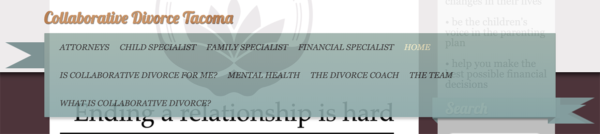

Collaborative Divorce Tacoma
Case Study

The Challenge
When I was looking for a divorce attorney, I was struck by how terrible most divorce-related websites can be. Maybe that’s partly a commentary on where my own head was at, but I do think that some types of websites are especially ripe for an overhaul with an eye toward the user experience.
Let me explain…
I know from experience that if you’re on a divorce site, you’re in a fairly delicate frame of mind, so user experience is of the utmost importance here. Everything needs to be as simple as possible; explanations need to be upfront and clear; visual communication through color, size, composition and other design principles should inspire confidence - not only in the firm of attorneys, but in the process itself, as well as in the future.
Moreover, the site design must suggest hope and positivity (which seem in short supply at this moment in time) without seeming to mock the viewer with overly bright colors, or moving into cliched territory. Many divorce sites I’ve seen sidestep this particular pitfall by looking really drab (like this one), or overly clinical and sterile. Both approaches have the unfortunate effect of reinforcing a depressing mindset; nor do they impart a sense of comfort or faith that you’re putting yourself in understanding, competent hands.
Studies show that most people who make the first move to divorce are women, so it stands to reason that women are more likely to take the further step of investigating which type of divorce process to undertake. With this knowledge, I wanted a site that subtly appealed to women through color and tone.
Studies also show that the brain undergoes radical changes during a marriage break-up, disrupting thought processes and memory, among other cognitive functions, so clear navigation and concise yet supportive explanations are of the utmost importance.
This was actually a divorce site that I perused, and I remember being so put off that I vowed to myself I’d come back and make it better (when I was feeling better, of course). This is a concept project, and - who knows - perhaps creating it was another step on my own path to further healing.
Here are some of the issues I encountered that I knew could be improved upon:
- A disorganized navigation in many ways; it was organized alphabetically, rather than in a way that flows logically or experientially; it contained so many categories that it was unwieldy, and also included confusing categories (what is the difference between a Child Specialist and a Family Specialist, for example?). To anyone unfamiliar with the lingo, this is confusing at best, and overwhelming at worst
- Very little explanation offered as to what Collaborative Divorce actually is. Particularly because it is a relatively new type of divorce process, it probably requires even more explaining upfront. Snippets of text along the sides do most of the explaining, and it’s very bare bones. I know that people who are investigating divorce want all the information they can possibly find, not phrases and incomplete sentences that leave too much unstated. The divorce process will affect a person and their family for the rest of their lives, and folks deserve a thorough explanation of what awaits them in this process.
- Dark brown color made the site old-fashioned and depressing
- Weird “layover” - too big and covers too much, makes it difficult to read the nav
- Weird “jump” that interrupts reading flow
- Banners of text give appearance as though the site were created in Microsoft Word 15 years ago
- hero/home image is a very large logo, which itself is a drab color, lending a “blah” look on the site, especially to be occupying so much room on the page


The Solution

- I used come color principles to elevate the mood by using bright, saturated color. A variety of color in the hero image, enhanced logo and text boxes suggest change and hope
- Forming the headline around the balloon within the “hero” image visually suggests cooperation, bending the text and subtly bending expectations of how text usually appears
- I answered visitors’ main question first: What is Collaborative Divorce?
- Streamlined nav bar to minimal amount of clear and desired categories
- Extensive copywriting and photo editing were necessary to flesh out the text, and create a professional look (uniform sizes for headshots, for example)

While I was at it, I couldn't resist fleshing out several of the sparse categories with famous practitioners from the world of cinema. If this organization were a real-life client, I’d further recommend an overall update to the personal information, in order to look fresh and current: more professional headshots, and more contemporary email addresses, for example.
Basically, I created the site I wish I’d had when I needed it.